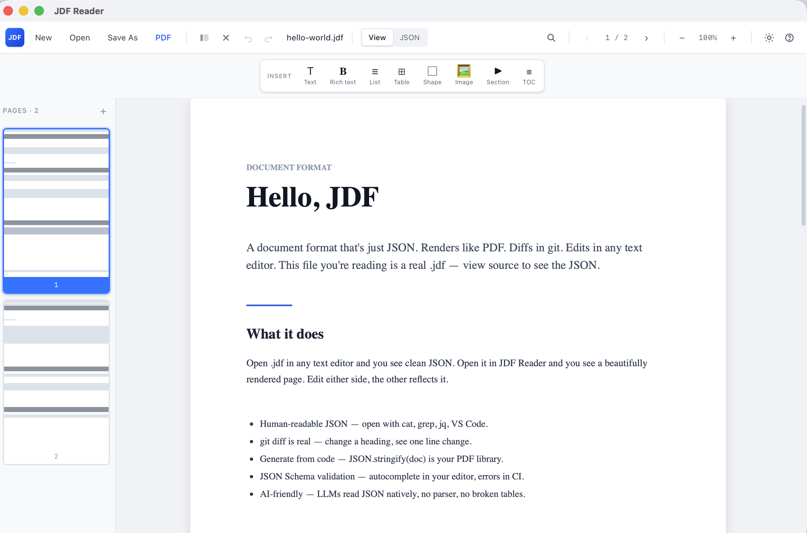

Edit in place
Double-click any paragraph, heading, list item, table cell, image — inline editor opens for that element only. Enter commits. Auto-saves to disk in 150ms.
Beautiful pages. Editable in any text editor. Diffable in git. Generated with one line of code. Searchable with grep. Validatable with a JSON Schema. Embeddable on any web page. Read more in less time: one file, every tool already speaks it.
brew tap uurtech/jdf<jdf src="...">npx @uurtech/jdf-cli import paper.pdfLinux, Windows, and Intel Macs: grab a build from the latest release.

It's JSON. Every consequence below falls out of that.
JSON is the language LLMs already speak. No PDF parsing, no broken columns, no lost tables. Hand a .jdf to GPT or Claude and it sees the structure exactly as you wrote it. More →
cat, grep, jq, VS Code, every linter, every diff tool. No plugin, no learning curve.
git diff is realChange one heading, the diff is one line. Documents review the same way as code.
JSON.stringify(doc). No PDF library, no font dictionaries, no encoding rules.
Autocomplete in your editor. CLI validation in CI. Type-safe generation.
grep "TODO" *.jdf works. jq queries pull every table cell on the page.
Opens the same way today and in 20 years. JSON has no proprietary owner.
A retrieval pipeline that ingests JDF skips most of the work it would do on a PDF. The structure that PDF parsers try to reconstruct is already in the file.
| Pipeline stage | JDF | |
|---|---|---|
| Parse / extract | pdfplumber / pymupdf / unstructured — layout analysis, font heuristics, OCR fallback for image-only pages |
JSON.parse(content) — no layout reconstruction, the structure is already in the file |
| Chunking | Token-windowed splits that frequently slice through tables, lists, footnotes | Each element (text / richtext / table / list / image) is a natural retrieval unit — no chunker config |
| Metadata | Synthesised after the fact (page number, "is this a heading?") and often wrong | First-class on every element: type, heading, page index, position, link target |
| Embedding noise | Repeated page headers / footers / page numbers leak into chunks | header and footer live in their own tree, never in content chunks |
| Re-indexing on edit | Re-parse + re-chunk + re-embed the whole PDF | Diff the JSON, re-embed only the changed elements |
| Tables | Cells smear across columns; multi-row headers collapse | { headers: [...], rows: [[...]] } — every cell at its real coordinate |
| Images / figures | Dropped or stubbed as [image] |
Stored in resources.images with alt text and a stable anchor — a vision step can fetch it at the exact retrieval point |
If a JSON-native document format becomes the default, documents themselves become a base layer for knowledge — not files you store, but interfaces software talks to.
A .jdf is a live data structure. Every paragraph, table, and figure has a stable identity that other systems can reference, query, and react to.
No more PDF parsers, no more layout heuristics, no more OCR fallbacks. The structure is in the file — every tool reads the same tree.
Retrieval skips the parse-and-reconstruct stage. An embedding pipeline ingests the document tree directly. The cited span is a real element, not a guess.
The way fax gave way to email and email to chat, the binary print-archive format gives way to the format every machine and model already speaks.
One schema, every consumer. Editors, viewers, summarisers, exporters, agents — all working off the same tree, no glue code per format.
Instead of “AI trying to understand humans’ files”, humans start writing in a format already built for AI reasoning.
The real endgame: documents stop being storage → they become interfaces.
Two unattended workflows the desktop app can't cover: legacy PDFs entering a RAG pipeline, and LLM-emitted JSON becoming a renderable document. Both run in CI, both validate against the schema, both fail loudly on malformed input.
Same algorithm the desktop reader uses, packaged as a node CLI. Run it on a build server, in a Lambda, in a CI step — output is the structured tree your retriever wants instead of `pdfplumber` heuristics.
# 1360-page AWS API spec → 60k structured elements in 90s
$ jdf import partner-api.pdf -o api.jdf --json
$ jdf validate api.jdf # schema gate — exit 1 fails CIModels emit JSON. Hand them the JDF schema, drop the response into the CLI, and you get a validated `.jdf` you can render, ship, or audit. Three input shapes are accepted: a full document, a bare element array, or a partial.
# model output → validated, renderable document
$ openai-cli generate > report.json
$ jdf import report.json -o report.jdf
# exit 1 if the model violated the schemaOne step in your workflow rejects malformed JSON or PDFs with weird structure before they reach production:
- name: Convert & validate generated document
run: |
npx @uurtech/jdf-cli import dist/output.json -o dist/output.jdf
npx @uurtech/jdf-cli validate dist/output.jdf{
"$jdf": "1.0.0",
"meta": { "title": "Hello", "pageSize": "A4" },
"styles": {
"h1": { "fontSize": 22, "fontWeight": "bold" }
},
"pages": [{
"elements": [
{ "type": "text", "content": "Hello, JDF",
"heading": 1, "style": "h1",
"position": { "x": 0, "y": 5 },
"width": 166 },
{ "type": "list", "listType": "unordered",
"items": [
{ "content": "Just JSON" },
{ "content": "Diffable" },
{ "content": "Editable anywhere" }
],
"position": { "x": 0, "y": 25 }, "width": 166 }
]
}]
}Double-click any paragraph, heading, list item, table cell, image — inline editor opens for that element only. Enter commits. Auto-saves to disk in 150ms.
Mouse over any element → floating bar appears with ↑ Move up · ↓ Move down · ⧉ Duplicate · × Delete. No right-click, no menu hunting.
Insert bar at the top of every page. Click to add: text, rich text, list, table, shape, image, collapsible section, auto-generated TOC.
Toggle View ↔ JSON. Two-way bound. Edit JSON directly with Cmd+S — visual render follows. Edit visually — JSON updates live.
Drag a PDF on the viewer. Every text run keeps its position, font, weight, color, opacity, link. Embedded images extracted. Vector shapes (rect/line/path) preserved with fills and strokes. Looks identical to the original — and it's editable.
Round-trip back to .pdf. Honors page size, orientation, text colors, real TOC, embedded images. Renders text/list/table/collapsible/shape.
Open .md for a continuous-scroll, GitHub-style render with full GFM. Toggle to paged JDF view. Cmd+F highlights matches inline.
⌘Z · ⌘⇧Z — 100-step history covering every text edit, structural change, and JSON commit. ⌘N for a new window — compare two documents side-by-side.
Draft-07 schema. jdf validate file.jdf reports path-level errors with Ajv. CI on three OSes (macOS, Linux, Windows) on every PR.
git diffJSON.stringify(doc)grep, jq, ripgrepEvery JDF document has these top-level fields:
| Field | Required | What it does |
|---|---|---|
$jdf | yes | Format version (semver) |
meta | yes | title, author, page size, margins, language |
styles | no | Reusable named style definitions |
resources | no | Embedded fonts and base64 images |
header · footer | no | Repeating header/footer with template vars or full element trees |
pages | yes | Array of pages, each with its own elements |
Element types: text (with heading 1-6), richtext, image, table, list, shape, collapsible, toc.
Full schema: spec/jdf-schema.json ·
Working example: hello-world.jdf.
brew tap uurtech/jdf
brew install jdfUpgrade later with brew upgrade --cask jdf.
Grab a build from the latest release — .deb, .AppImage, .rpm, .msi, .exe all built by GitHub Actions on every tag.
git clone https://github.com/uurtech/jdf.git
cd jdf
pnpm install
pnpm tauri buildRequires Node 20+, pnpm 9+, Rust stable.